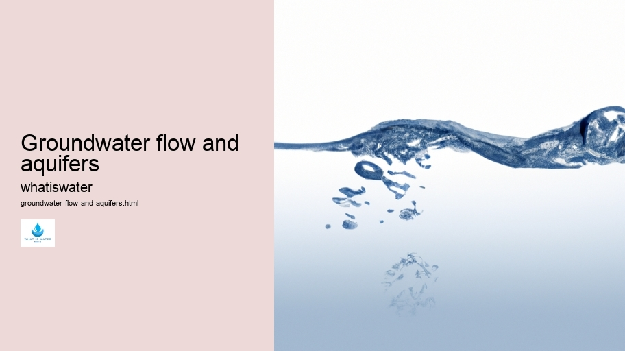

Hydrological Cycle
Hydrological Cycle
Evaporation and transpiration
Condensation and cloud formation
Precipitation and rain patterns
Surface runoff and river systems
Groundwater flow and aquifers
Snowmelt and glacial processes
Water storage in oceans lakes and reservoirs
Soil moisture and infiltration
Water balance and budgeting
Human impact on the hydrological cycle
Marine Ecosystems
Marine Ecosystems
Coral reefs and their biodiversity
Mangrove forests as coastal protectors
Ocean currents and climate regulation
Deepsea habitats and extremophiles
Intertidal zones and estuarine ecosystems
Marine food webs and trophic levels
Freshwater Ecosystems
Freshwater Ecosystems
Conservation efforts for marine species
Marine biogeochemical cycles
Impact of global warming on oceans
Water Resource Management
Water Resource Management
Rivers streams and creeks ecosystems
Lakes ponds wetlands habitats
Biodiversity in freshwater environments
Aquatic plants role in oxygenation
Freshwater fish species diversity
Invasive species impact on freshwater systems
Pollution threats to freshwater sources
Conservation strategies for freshwater biomes
Role of wetlands in flood control
Importance of riparian buffers
Cultural Significance of Water
Cultural Significance of Water
Sustainable water use practices
Desalination technologies for fresh water supply
Wastewater treatment processes
Rainwater harvesting techniques
Management of water during drought conditions
Transboundary water resource politics
Infrastructure for water distribution
Agricultural irrigation efficiency
Urban water demand management
Impact of climate change on water resources
About Us
Contact Us

Groundwater flow and aquifers
>
Aquifers
Groundwater flow is an essential process within the Earth's hydrological cycle.
Thermal Pollution
It refers to the movement of water through the pores and fractures of underground geological formations known as aquifers. These subterranean reservoirs, often composed of rock, sand, or gravel, serve as natural storage units for freshwater that can be accessed by wells and springs.
Aquifers are classified into two main types: unconfined and confined. Unconfined aquifers have a permeable layer open to surface infiltration, allowing water from precipitation and surface water bodies to seep directly down into them. Confined aquifers, on the other hand, are bounded above and below by impermeable layers which restrict direct recharge from the surface; their replenishment comes mainly from water percolating at distant recharge areas where the confining layers pinch out or are absent.
The rate of groundwater flow in these aquifers depends on several factors such as porosity – the proportion of void space within the rock or soil – and hydraulic conductivity – a measure of how easily a fluid can move through porous material.
Hydrologic Cycle
Additionally, pressure gradients created by changes in elevation or pumping activities influence how quickly groundwater travels.
Aquifers
Understanding groundwater dynamics is crucial for managing this precious resource sustainably.
Groundwater flow and aquifers - Hydroponics
Thermal Pollution
Wetlands
Water Conflict
Over-extraction can lead to depleted reserves causing issues like land subsidence and reduced flow to springs and rivers that depend on steady groundwater contributions. Moreover, pollution from agricultural runoff, industrial spills, or leaking sewage systems poses significant risks to groundwater quality.
Protection efforts include implementing adequate zoning laws around recharge areas and conducting regular monitoring programs to detect contamination early before it causes widespread problems. Advances in technology also offer improved methods for detecting aquifer levels and potential pollutants with greater precision than ever before.
In conclusion, effective management of groundwater resources requires comprehensive knowledge about aquifer characteristics and careful monitoring of both quantity and quality aspects of this hidden yet vital component of our planet's fresh water supply.
Watersheds
Wetlands
Hydrological Cycle
Check our other pages :
Groundwater flow and aquifers
Importance of riparian buffers
Surface runoff and river systems
Urban water demand management
Frequently Asked Questions
What is groundwater flow and how does it occur?
Groundwater flow refers to the movement of water through the pore spaces and fractures in underground layers of soil, sand, and rocks known as aquifers. This process occurs due to the force of gravity and pressure differences within the aquifer. Water infiltrates into the ground through precipitation or from bodies of water like lakes and rivers, then moves slowly from areas where the water table (the upper level of saturated ground) is higher to lower areas, often eventually discharging into springs, streams, or oceans.
What are aquifers and what role do they play in groundwater supply?
Aquifers are geological formations that can store, transmit, and yield significant amounts of water to wells or springs. They consist of permeable materials such as gravel, sandstone, or fractured limestone that allow water to move freely. Aquifers play a critical role in groundwater supply by serving as natural underground reservoirs for freshwater. Communities around the world rely on aquifers for drinking water, irrigation for agriculture, industrial processes, and maintaining ecosystems.